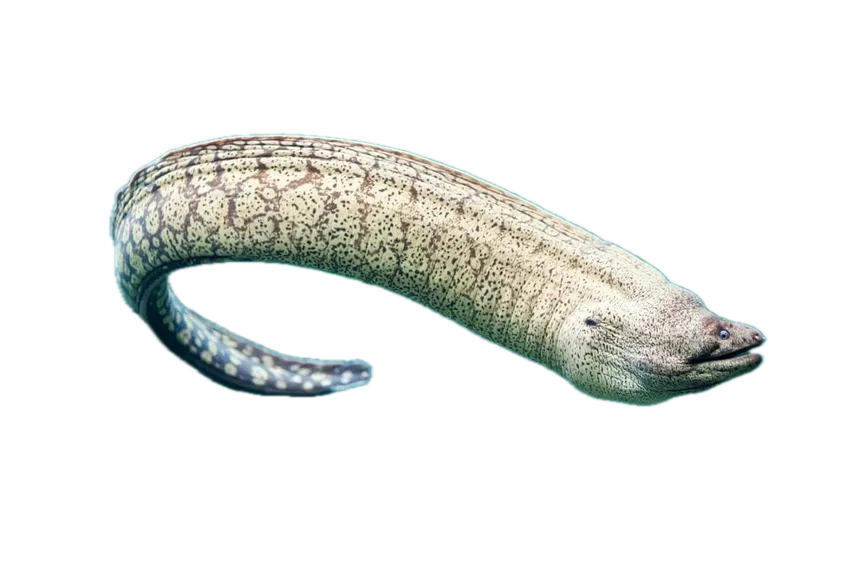

Nocturnal Navigators
Eels
Eels slip through reefs and riverbeds with ribbon-like grace. From electric bursts to hidden jaws, they’ve evolved unique strategies to hunt and survive in shadowed habitats.
Interesting Facts
- Electric eels—actually a type of knifefish—generate powerful shocks to stun prey and communicate.
- Moray eels possess a second set of jaws, the pharyngeal jaw, that shoots forward to secure food.
- Many species migrate vast distances to spawn in the Sargasso Sea, a mystery scientists are still untangling.
